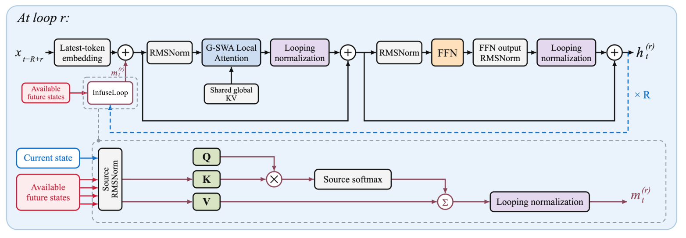

Looped Transformer (LT)
Efficiency ✕Quality ✓
Simulated playback at measured speed ratios. Quality marks describe this example.
The charts compare measured eight-loop quality and decode-only latency, using the 0.6B models trained on 6B tokens. Latency uses one GB200 at batch size 32 with 2K-token prompts and outputs, separately from the illustrative playback.
These continuations are unchanged checkpoint outputs selected from 64 prompts. The animation uses uniform token intervals scaled from an earlier, validated 256-token benchmark on one GB200: about 7.7× faster for InfuseLoop than LT, and nearly the same rate as PLT. It is a simulated illustration, not a timing measurement of this passage. One slowdown factor applies to every model.



InfuseLoop improves depth scalability while preserving efficient parallel execution, expanding the performance–latency Pareto frontier of looped Transformers.


Each quality point is a separately trained 0.6B model using 6B tokens. The latency benchmark uses one GB200 at batch size 32, 2K-token prompts and outputs, and the median of three decode-only runs after prefill. Context sensitivity uses 64-cycle windows, separately from the full-generation latency benchmark. CUDA Graphs, FA4, and custom G-SWA kernels are used. Cache overhead is computed from shared global KV, loop-local windows, and aggregation states. Larger and MoE models remain untested.